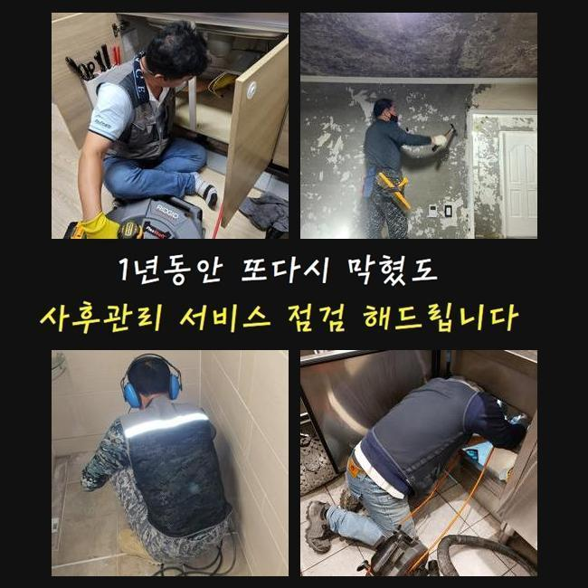
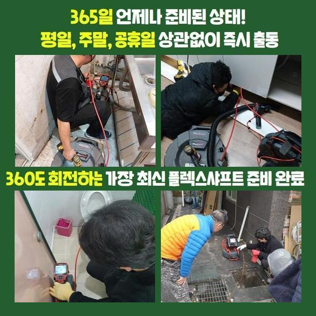
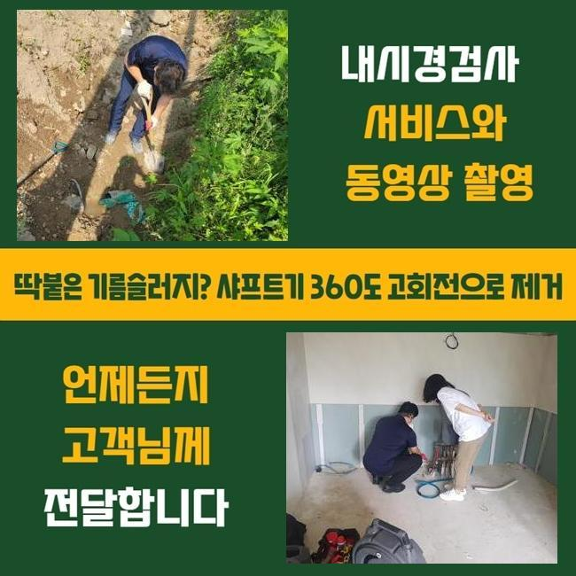
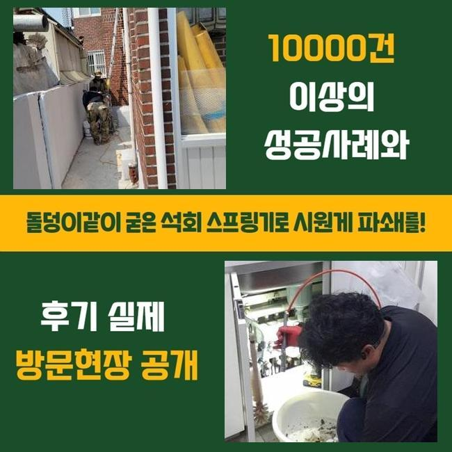
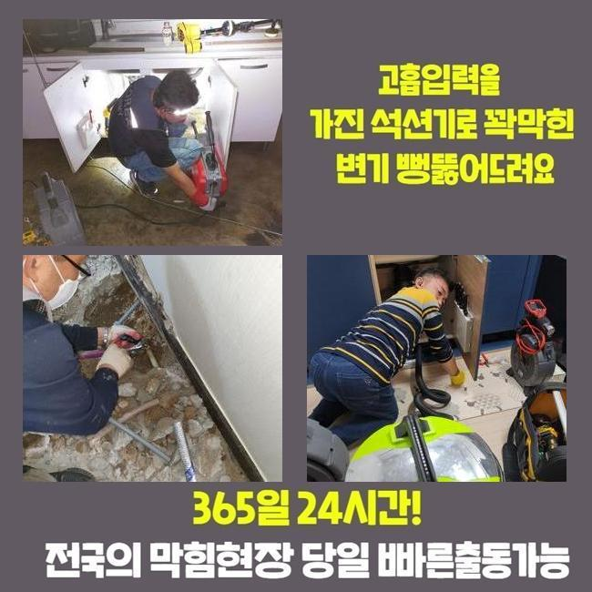
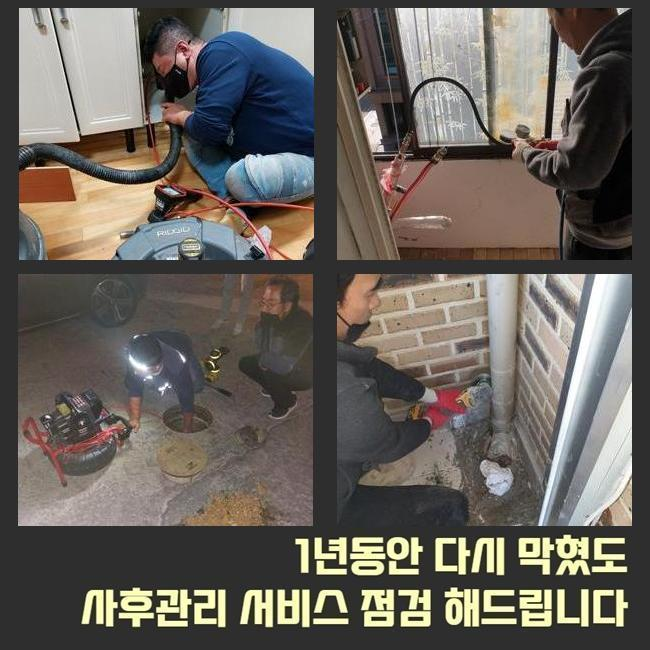
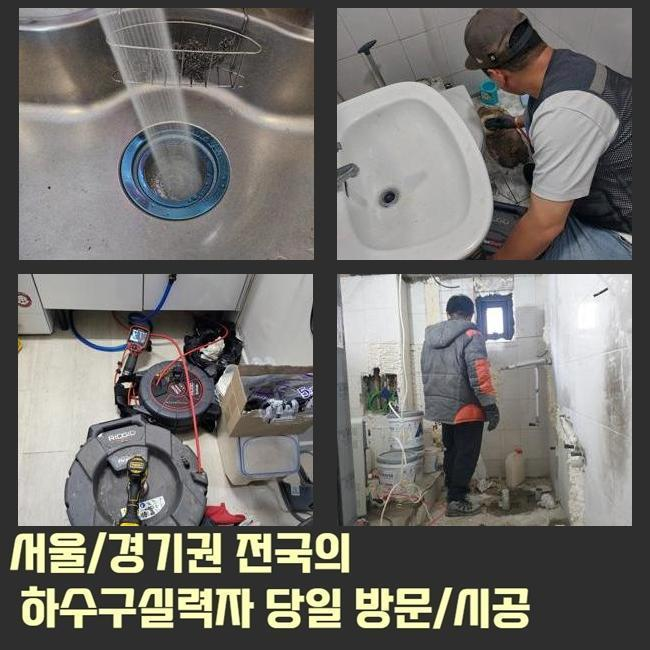

🏠 안성 연지동세탁실막힘 대덕면 맨홀막힘 설비하는곳
안성 연지동 하수구막힘 전문 시공 후기

📋 작업 개요
- 위치: 안성 연지동, 연지동, 안성
- 서비스 유형: 하수구막힘, 배관막힘, 맨홀막힘, 누수수리, 역류해결, 뚫는업체, 배관청소
- 작업 일시: 2025. 6. 6. 0:05
- 업체명: 하수구수사대 (010-5615-2118)
🔍 문제 상황
갑자기 하수도가 막혔을 경우 난감하기 마련이겠죠
단순히 막힌 경우라면 유튜브를 이용하거나 네이버에 검색하여 여러가지의 방식들을 시도해볼수 있을 것이고 셀프조치를 통하여 해결하는것이 가능하다고 할수있죠
배수상태에 문제를 보이는것이 반복적으로 일어나거나 하수구악취가 심각한 경우라면 전문업체를 불러서 막힌원인에 대해서 정확히 알아낸후 해결하는게 좋아요
장소로 이동해서 체크하고 상황과 알맞은 전문기계를 사용하여 잔해물들을 없애야지만 쾌적한 하수구를 유지할수 있겠습니다
전화상으로 자세히 일러주셔도 현장쪽으로 방문해서 확인하게되면 변수들이 많으므로 유선보다는 빠르게 작업을 문의하는게 알맞은 선택입니다
얼마전에 전화주신 의뢰자께선 집안의 화장실배관이 막혀버리며 현장장소가 역류때문에 바닥까지 잠겨서 신속한 해결이 필요했는데요
긴급한 요청에 상태가 어떠한지 예측할수 있었으며 통화가 끝나자마자 전문기기를 구비하여 빠르게 찾아갔습니다
안성 연지동세탁실막힘 대덕면 맨홀막힘 설비하는곳
도착해서 상태를 보았더니 고객분의 욕실상황은 바닥에 하수도가 막히게되어 상당수의 물들이 고여있었죠
이같은 상황이면 효과적인 작업을 위하여 막힘문제를 일으킨 이유에 대하여 알아내는게 첫째로 착수되는것이 우선입니다

🔎 원인 분석
💡 전문가 진단: 정밀 진단 장비를 사용하여 슬러지의 고착 여부를 판명하고 타격/세척 작업을 실시했습니다.
정확한 원인이 밝혀져야지만 올바른 방법대로 해결할수가 있으며 재발하는 문제를 막을수있죠
자세하게 확인해서 고객의 궁금함을 해결드린뒤 단계별로 수리에 돌입했죠
바닥부분에 고여있던 물을 바깥에 배출해내기 위하여 석션장비를 활용하여 흡수했죠
물이 고인채 시공을 진행하는것이 어렵기에 먼저 환경자체를 깨끗히 만들어주는게 중요한 부분이랍니다
2차과정에 관련된 내용도 고객님에게 꼼꼼히 안내드린뒤 전체적으로 차질이없이 이어갔죠
석션도구를 써서 오수를 빨아들이게 되면 소량의 이물이 올라오는데요
막힘을 처리하려면 하수구안을 정확하게 살펴봐야 합니다
그렇지만 기술성이 뛰어나도 육안만으로 하수구안쪽을 파악하는것은 쉽지않기에 내시경장비를 활용했습니다
육안만으로 확인하기 쉽지않은 껌껌한 배관내부를 선끝쪽에 이어진 라이트와 CCTV가 배관을 확인하게해주는 필수적인 장비에요
카메라기기로 내부를 살펴봤더니 여러가지의 찌꺼기들과 많은양으로 머리칼이 뭉쳐있는것이 발견되었죠
굳게된 오염물은 석션만으로 해결할수없고 샤프트기계를 활용해서 뭉쳐버리게된 이물질들을 없애야 하죠

🔧 작업 과정
정확히 작업에 착수하려면 하수구 깊은곳까지 파악해야하는 작업계획이 요구되었어요
더 깊은곳으로 배관촬영 기계를 투입했는데요
모니터체크를 진행하니 깊은부분도 오염물과 머리카락들이 고착화된채 하수구통로를 막히게하여 청소작업이 필수였죠
방금 안내드렸지만 딱딱해진 이물질들은 흡입과정만으로 배출시키는것은 어려운데요
분쇄기구를 활용하여 분해력으로 석회물질을 조각해내는것이 필요합니다
분쇄공정을 마무리한후 석션흡입을 통하여 만에하나 조각난 오염물들이 배관으로 들어가는것을 방지한답니다
스케일링에 착수하면서 생각나는 막힘문제 예방법을 일러드리면서 지속해서 오염물을 소거시키는 과정들을 반복했죠
반복하는 과정이 있어야만 관안쪽에 누적된 잔해물들을 살펴볼수있고 전체적으로 제거하여 뚫는과정을 끝마칠수 있죠
반복해서 플렉스샤프트로 조각난 잔해물은 썩션기로 흡입해내는 수리를 끝마치고 카메라를 진입시켜 내부상황이 어떠한지 살펴봤답니다
반복하여 진행해보니 막힘문제의 원인이라고 할수있었던 각종 찌꺼기가 보이지 않았으며 배수테스트도 원활히 진행했죠
제거된 이물질들을 어떠한 방법으로 정리하는지도 중요하다고 할수가 있는데요
전에 설명드린것과 같이 배관에 흘려보낼 경우 다른쪽에서 막힘현상을 발현시킬수 있답니다
그래서 바깥에 배출되어진 이물은 따로 거른뒤 하수들만 배관속에 흘려보내는것이 좋으며 이외에 덩어리들은 일반쓰레기로 처리합니다
세밀한 작업과정을 반복적으로 진행하여 막힘증세를 해결하게 되었고 물길자체가 문제없이 뚫린것을 확인하게 되었답니다
한집에서 오랜시간 머무르신 경우라거나 평소에 배관관리가 소홀했다면 오늘 작업처럼 배관청소가 필요하게 될거에요
예방하는 방법과 관련해 간략하게 안내드리자면 하수구망이나 트랩설치를 통하여 배관관리를 할수있죠


✅ 작업 완료
거름망은 찌꺼기를 걸러주는 제품이기에 약간의 오염물들이 유입되는것을 방지해줘요
하수구트랩은 하수관에서 생기는 악취증상을 예방시켜 줍니다
화장실 배관이 막혀서 고민하고 계시다면 설명드린대로 전문업체와 컨택하여 처리해보는게 전체로 보았을때 확고한 방식이라고 말할수 있어요
하수구문제를 방치하실경우 누수나 역류같은 증세를 발생시킬수가 있죠 저희업체로 문의주신다면 빠른처리로 불편함이 느껴진 부분을 해소시키도록 할게요!
이것외에도 궁금증이 풀리지 않으신게 남아있을 경우에는 유선 문의를 통하여 상담해보세요! 상세히 돕도록 하겠습니다




⚠️ 베란다 누수 및 방수 관리 방법
- ✅ 비가 많이 올 때 창틀 주변이나 아래층 천장에 얼룩이 생기는지 정기적으로 확인해 보세요.
- ✅ 우수관 주변 실리콘 마감이 들뜨거나 깨진 틈새가 있는지 손상 여부를 수시로 체크하세요.
- ✅ 베란다 바닥 타일의 줄눈(메지)이 소실되면 그 틈으로 물이 침투하여 누수가 유발됩니다.
- ✅ 누수 의심 증상 발견 시 방치하면 아래층 손실이 커지므로 즉시 전문가의 진단을 받으십시오.
💡 핵심 정리
- 확실한 장비 작업(내시경 점검 및 샤프트 스케일링)으로 원인을 뿌리 뽑습니다.
- 작업 후 1년 이내에 동일한 부위 재발 시 100% 무상 A/S 서비스를 보장합니다.
- 서울 · 경기 · 인천 전 지역에 24시간 언제든 긴급 출동할 수 있도록 항시 대기 중입니다.
❓ 자주 묻는 질문 (FAQ)
🚨 안성 연지동 하수구막힘 문제로 고민이신가요?
정확한 원인 진단과 확실한 시공으로 재발 없는 해결을 약속드립니다.
24시간 긴급 출동 | 서울 · 경기 · 인천 전지역 | 1년 내 재발 시 무상 A/S